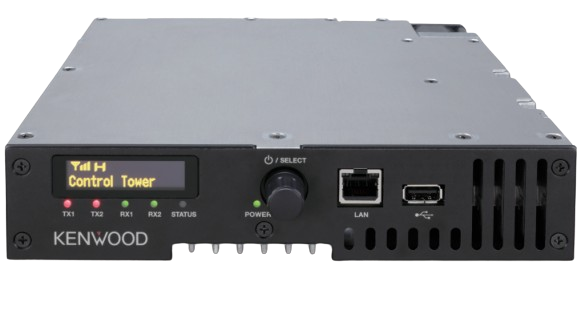
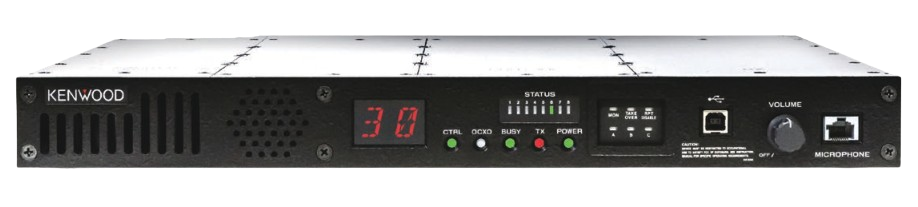

DMR / NXDN Base Station
NXR-1000 Series

NXR-1700/1800
MULTI-MODE, SINGLE-MINDED, SPACE-SAVING SOLUTION
- Frequency: VHF 136-174 MHz / UHF1 450-520 MHz / UHF2 400-470 MHz
- Protocol: Analog / DMR / NXDN
- Display: Large 1.71-inch OLED with Icons and Numeric Display
- Key features: Multi-Site Conventional IP Network, Hot Standby System Redundancy
NXR-5000 Series

NXR-5700/5800
NEXEDGE VHF/UHF DIGITAL and FM BASE-REPEATER
- Frequency: VHF 136-174 MHz / UHF 400-470 MHz
- Protocol: Analog, NXDN
- Display: Two-Digit Numeric Display
- Key features: NEXEDGE Gen2 Trunking Network, Telephone Interconnect Option